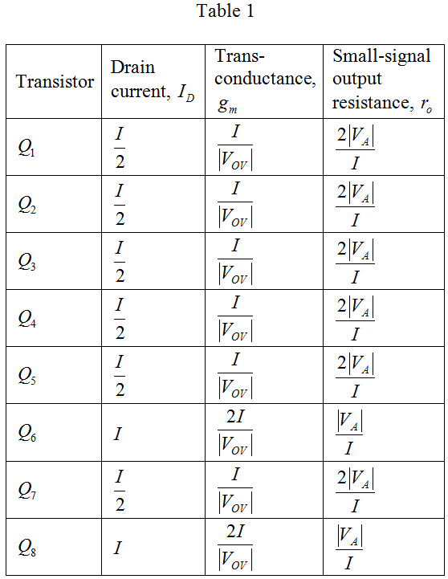
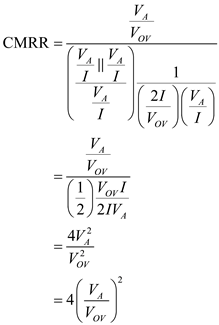

Step 1:
(a)
Refer to Figure P8.119 in the textbook for a metal oxide semi-conductor (MOS) differential amplifier.
The bias current,  flows through two equal branches, one of which consists transistor,
flows through two equal branches, one of which consists transistor,  and a current mirror, , and another one consists transistor,
and a current mirror, , and another one consists transistor,  and a current mirror, . The current equally divides into the two branches.
and a current mirror, . The current equally divides into the two branches.
Consider that the current mirror,  has a transmission factor of 1, therefore, the same one-half of bias current passes through the current mirror and transistor,
has a transmission factor of 1, therefore, the same one-half of bias current passes through the current mirror and transistor,  .
.
Consider that the current mirror,  has a transmission factor of 2, therefore, the other half of bias current does not pass through the current mirror. The current doubles and flows through transistors, .
has a transmission factor of 2, therefore, the other half of bias current does not pass through the current mirror. The current doubles and flows through transistors, .
Consider that all the transistors have same overdrive voltage,  . Use this value to find the transconductance of each transistor.
. Use this value to find the transconductance of each transistor.
Consider that the early voltage is  . Use this value to find the small-signal output resistance,
. Use this value to find the small-signal output resistance,  of each transistor.
of each transistor.

Step 2:
Tabulate the results of drain current, transconductance, and small signal output resistance for each of the transistor.

Step 3:
(b)
Find the differential gain of the amplifier.
Apply two voltages to the two input transistors,  . The input differential voltage is
. The input differential voltage is  . Consider that the two input voltages are, .
. Consider that the two input voltages are, .
Find the output voltage at transistor,  in one branch.
in one branch.
Here, , therefore, simplify the function.
Find the current through the transistor,  .
.
Step 4:
The current, passes through the gates of transistors, . Find the gate voltages.
Find the current through the transistor,  .
.
Step 5:
Find the output voltage at transistor,  in other branch.
in other branch.
Here, , therefore, simplify the function.
Find the current through the transistor,  .
.
Step 6:
Find the total current,  .
.
Find the differential output voltage,  .
.

Find the differential gain,  .
.
Substitute the values of from Table 1.
Thus, the differential voltage gain,  is, .
is, .
Step 7:
(c)
Replace each of the input transistors,  together with their source resistance, with a controlled current source, and an output resistance.
together with their source resistance, with a controlled current source, and an output resistance.
Here, the resistance,  is the output resistance of the bias current source,
is the output resistance of the bias current source,  .
.
Consider that the following is the current transfer ratio for each current mirror:
Find the current through the transistor,  through the current mirror, with the specified current transfer ratio.
through the current mirror, with the specified current transfer ratio.
Find the current through the transistor,  through the current mirrors, , and with the specified current transfer ratios.
through the current mirrors, , and with the specified current transfer ratios.
Step 8:
Find the total current,  .
.
Simplify the expression further.
Step 9:
Find the differential output voltage,  .
.

Find the common mode gain,  .
.
Thus, the common mode gain, is .
Step 10:
(d)
Find the common mode rejection ratio (CMRR).
Here, the resistance, is the output resistance of the bias current source,  . Consider that the bias current source is implemented as a simple mirror. Therefore,
. Consider that the bias current source is implemented as a simple mirror. Therefore,
Substitute the values of from Table 1.

Thus, the common mode rejection ratio (CMRR) is, .
Step 11:
(e)
Find the input common mode range of the amplifier.
Consider the upper and lower limits of the input voltage.
The lower limit of the common mode voltage reduces the voltage across the bias current source,  to reach the minimum required value.
to reach the minimum required value.

The upper limit of the common mode voltage causes the transistors, to leave the saturation region and enter the triode region.
Thus, the common mode range is, .